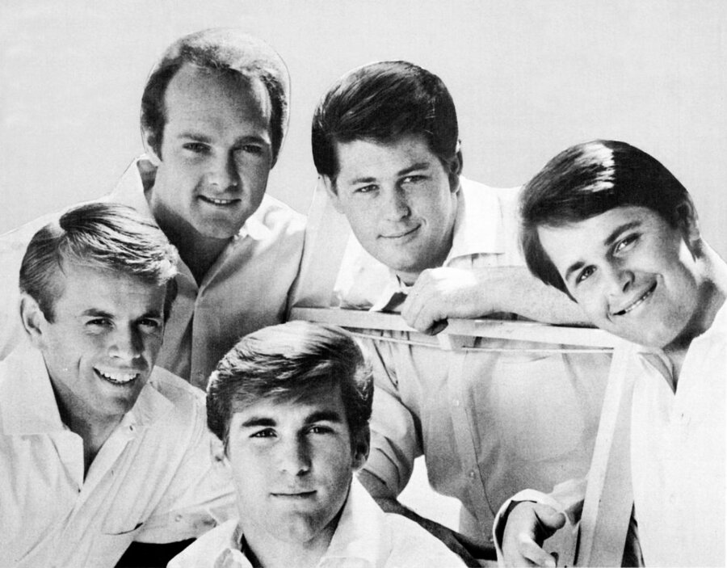

The Beach Boys turned Hawthorne, California garage rehearsals into some of the most influential vocal harmonies in American pop music.
Formed in 1961, the band spent the decade chasing surf culture, heartbreak and studio perfection before tragedy and genius nearly tore the group apart.

Table of Contents
- How The Beach Boys Started in Hawthorne
- Pet Sounds, Good Vibrations and the Smile Album
- Tragedy, Legacy and the Hall of Fame
- FAQ
How The Beach Boys Started in Hawthorne
Brothers Brian, Dennis and Carl Wilson grew up in Hawthorne, a working class suburb of Los Angeles.
Their cousin Mike Love and family friend Al Jardine rounded out the original 1961 lineup.
Dennis, the only true surfer in the group, suggested writing a song about the local surfing craze.
Brian and Mike wrote "Surfin'" in an afternoon, and the group recorded it with borrowed instruments.
Candix Records released the single on November 27, 1961.
It climbed to number 75 nationally, enough to draw a major label's attention.
Signing to Capitol and the First Top 40 Hits
Capitol Records signed the group in 1962 on the strength of that regional buzz.
"Surfin' Safari" followed that June and peaked at number 14.
It opened a five-year run of sixteen consecutive top 40 hits.
The debut album of the same name arrived that October.
"Surfin' U.S.A." became the band's first top 5 single the following spring.
Its melody borrowed from Chuck Berry's "Sweet Little Sixteen."
David Marks briefly took over rhythm guitar from Jardine in 1962 and 1963 before Jardine returned for good.
Pet Sounds, Good Vibrations and the Smile Album
By December 1964, the pace of touring, writing and producing pushed Brian Wilson to a panic attack mid-flight.
He announced in January 1965 that he would stop touring.
Instead he would focus on songwriting and studio production.
Bruce Johnston joined that year as his touring replacement and later became a full member.
Freed from the road, Brian spent months building elaborate arrangements with the session musicians later nicknamed the Wrecking Crew.
Pet Sounds and Good Vibrations
Pet Sounds arrived on May 16, 1966, trading surf anthems for lush orchestration.
Its lyrics turned toward longing and self-doubt.
Critics shrugged at first, but the album's reputation grew until it stood among the most influential records in popular music.
Pet Sounds is often credited with pushing The Beatles toward more ambitious studio work of their own.
"Good Vibrations" followed that October, pieced together from dozens of separate recording sessions.
It became the group's third U.S. number one and first British chart-topper, and it later went triple platinum.
The Smile Album That Never Came
Brian began work on a follow-up called Smile through 1966 and into 1967.
It was intended as an even more ambitious statement.
Personal strain, technical limits and disputes within the band led Capitol to shelve the project.
Smile became one of the most famous unreleased albums in pop music history.
Its songs scattered across later releases for decades, and its unfinished ideas still shape psychedelic rock.
Brian finally completed and released a solo version, Brian Wilson Presents Smile, in 2004.
| Album | Released | Notable song |
|---|---|---|
| Surfin' Safari | October 1962 | Surfin' Safari |
| Surfin' U.S.A. | March 25, 1963 | Surfin' U.S.A. |
| Shut Down Volume 2 | March 2, 1964 | Fun, Fun, Fun |
| Summer Days (And Summer Nights!!) | July 5, 1965 | California Girls |
| Pet Sounds | May 16, 1966 | God Only Knows |
| Smiley Smile | September 18, 1967 | Good Vibrations |
Tragedy, Legacy and the Hall of Fame
Brian's mental health struggles deepened through the late 1960s and 1970s.
Drug use and the pressure of following Pet Sounds only made things worse.
Mike Love and Al Jardine steered the group toward a more commercial sound while Brian receded from day to day involvement.
Dennis Wilson drowned in Marina del Rey on December 28, 1983, while diving near a boat he had once owned.
Carl Wilson, the band's steadiest presence on stage, died of lung cancer on February 6, 1998, at age 51.
Brian Wilson's Death and the Band's Final Chapter
Brian Wilson died on June 11, 2025, in Beverly Hills at age 82.
His death certificate listed respiratory arrest as the cause.
He had been diagnosed with a neurocognitive disorder the year before and was living under a conservatorship at the time of his death.
His death closed the book on the band's founding lineup, following Dennis and Carl decades earlier.
Mike Love has continued touring under the Beach Boys name with various lineups since the 1990s.
The Rock and Roll Hall of Fame inducted the band's core lineup in 1988, citing its influence on vocal harmony and studio recording.
The Recording Academy honored the group with a Grammy Lifetime Achievement Award in 2001.
The band notched more Top 40 hits than any other American rock act of the era.
Four of its singles hit number one at home, and it has sold over 100 million records worldwide.
Six decades later, their harmonies still echo through surf rock, psychedelic pop and every summer radio playlist.
- Brian Wilson, keyboards, vocals and primary songwriter and producer
- Mike Love, lead vocals
- Carl Wilson, lead guitar and vocals
- Dennis Wilson, drums
- Al Jardine, rhythm guitar and vocals
FAQ
Who are the members of The Beach Boys?
The founding lineup was brothers Brian, Dennis and Carl Wilson, their cousin Mike Love and family friend Al Jardine.
David Marks briefly replaced Jardine on guitar in 1962 and 1963, and Bruce Johnston joined as a touring member in 1965 before becoming permanent.
Why did Brian Wilson stop touring with the band?
Brian suffered a panic attack on a flight in December 1964 brought on by the stress of constant touring, writing and producing.
He announced in January 1965 that he would stay off the road and focus on songwriting and studio work instead.
What happened to Dennis and Carl Wilson?
Dennis Wilson drowned in Marina del Rey, California, on December 28, 1983, while diving near a boat he had once owned.
Carl Wilson died of lung cancer on February 6, 1998, at age 51.
When did Brian Wilson die?
Brian Wilson died on June 11, 2025, in Beverly Hills, California, at age 82.
His death certificate listed respiratory arrest as the cause, following a neurocognitive disorder diagnosis and conservatorship the year before.
Is The Beach Boys in the Rock and Roll Hall of Fame?
Yes.
The band's core lineup was inducted into the Rock and Roll Hall of Fame in 1988, and the Recording Academy gave the group a Grammy Lifetime Achievement Award in 2001.
Few American bands packed as much triumph and heartbreak into one decade as this one did.
The Beach Boys turned California sunshine into ambitious studio music, a story told in full on Wikipedia's history of the band.
Their harmonies anchor the site's Garage & Surf Rock hub alongside acts that shared their beaches and studios.
Back to the 1960smusic.net homepage to explore every genre of the decade.